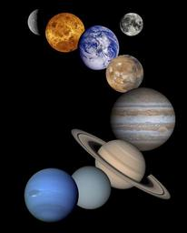
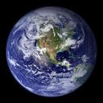
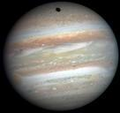
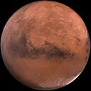
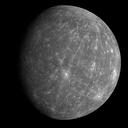
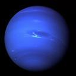
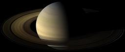
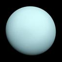
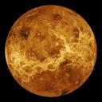

Our solar system has eight planets and five dwarf planets - all located in an outer spiral arm of the Milky Way galaxy called the Orion Arm.
Moving outward from the Sun, the planets are: Mercury, Venus, Earth, Mars, Jupiter, Saturn, Uranus, and Neptune.








In 2006, Pluto was reclassified as a dward planet.
NASA's New Horizons spacecraft visited Pluto in 2015, and is currently exploring the Kuiper Belt beyond Pluto.
The other dwarf planets are Ceres, Makemake, Haumea, and Eris.